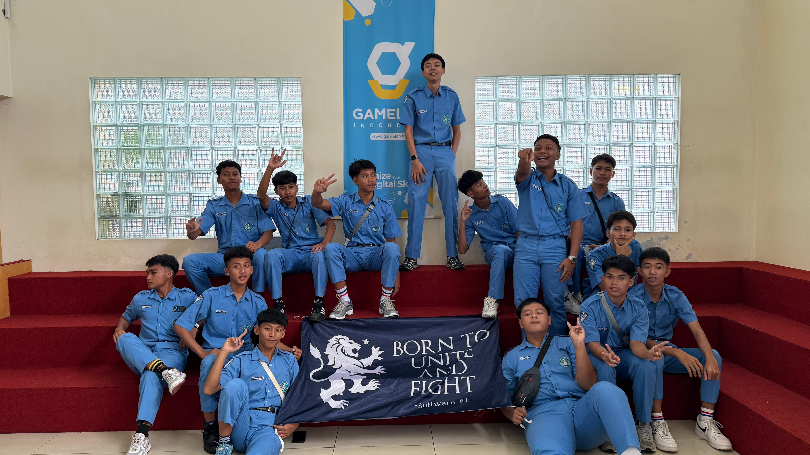

Batik Nusantara — Website Usaha
Website dinamis untuk toko batik: katalog produk dari database, filter kategori, form kontak, dan panel admin untuk mengelola produk.
Kunjungi Website Usaha →Halo, perkenalkan
Junior Web Developer
Saya membangun website yang rapi, cepat, dan mudah digunakan — mulai dari tampilan antarmuka sampai logika di baliknya. Portofolio ini dibuat sebagai bagian dari Uji Sertifikasi Kompetensi skema Junior Web Developer.
Saya merupakan siswa SMK Negeri 1 Jenangan jurusan Rekayasa Perangkat Lunak (RPL) yang memiliki ketertarikan besar di bidang teknologi, khususnya pengembangan website. Saya senang mempelajari hal-hal baru yang berkaitan dengan proses pembuatan dan pengembangan sebuah website.
Saat ini saya sedang menekuni pembuatan website menggunakan HTML, CSS, dan JavaScript untuk sisi tampilan, serta PHP dan MySQL untuk pengelolaan data pada sisi server. Saya juga terus mengembangkan kemampuan dalam pemrograman dan memahami cara kerja sebuah website secara menyeluruh.
Sebagai bagian dari uji kompetensi ini, saya membangun dua unit website: website profil ini, serta website usaha Batik Nusantara yang dilengkapi katalog produk dan panel admin untuk pengelolaan data.
Junior Web Developer (Pemula)
SMKN 1 Jenangan
Rekayasa Perangkat Lunak — Pengembangan Website
Jurusan Rekayasa Perangkat Lunak (RPL). Fokus pembelajaran pada pemrograman web, basis data, dan pengembangan aplikasi.
Menempuh pendidikan menengah pertama di SMPN 1 Pulung, tempat saya pertama kali mengenal dasar-dasar ilmu komputer.
Menempuh pendidikan dasar di SDT Ainul Ulum sebagai jenjang pendidikan formal pertama saya.
Melaksanakan Praktik Kerja Lapangan (PKL) di Kazuya Media Indonesia, tempat saya memperoleh pengalaman langsung dalam dunia kerja sekaligus menerapkan ilmu yang telah dipelajari di bidang pengembangan web.
Menyusun struktur halaman semantik dan tampilan responsif untuk berbagai ukuran layar.
MahirMenambahkan interaksi di sisi client seperti validasi form dan navigasi dinamis.
MenengahMembangun logika sisi server, koneksi database, serta operasi CRUD yang aman.
MenengahMengelola versi kode dan menjaga riwayat perubahan proyek tetap rapi.
DasarWebsite dinamis untuk toko batik: katalog produk dari database, filter kategori, form kontak, dan panel admin untuk mengelola produk.
Kunjungi Website Usaha →Website statis yang sedang Anda lihat ini — dibangun dengan HTML dan CSS murni, responsif, dan berfokus pada tata letak yang bersih.
Anda Sedang Melihatnya →BNSP / LSP — 2024 — 2026. Ganti dengan nomor sertifikat setelah lulus uji kompetensi ini.

Dokumentasi kegiatan selama menjalani Praktik Kerja Lapangan (PKL) di Kazuya Media Indonesia, sebagai bentuk pengalaman nyata dalam dunia kerja.

Mengikuti kegiatan Kunjungan Industri sebagai sarana untuk mengenal secara langsung dunia kerja di bidang teknologi serta menambah wawasan mengenai penerapan ilmu yang dipelajari di sekolah.
MVC atau Model View Controller merupakan salah satu konsep arsitektur yang banyak digunakan dalam pengembangan aplikasi berbasis web. MVC digunakan untuk memisahkan bagian data, tampilan, dan proses aplikasi sehingga kode program menjadi lebih terstruktur dan mudah dikelola.
MVC merupakan singkatan dari Model, View, dan Controller. Ketiga bagian tersebut memiliki tugas yang berbeda tetapi saling berhubungan dalam menjalankan sebuah aplikasi.
Dengan menggunakan konsep MVC, pengembang dapat memisahkan kode berdasarkan fungsinya. Hal ini membuat proses pengembangan dan pemeliharaan aplikasi menjadi lebih mudah, karena perubahan pada satu bagian (misalnya tampilan) tidak akan mengganggu bagian lain (misalnya logika data).
Bagi pemula yang baru belajar web development, memahami konsep MVC sangat membantu dalam menulis kode yang rapi dan terorganisir sejak awal. Selain itu, banyak framework populer seperti Laravel, CodeIgniter, dan Express.js yang menerapkan pola MVC, sehingga pemahaman konsep ini akan mempermudah proses belajar framework-framework tersebut.
Tertarik berdiskusi soal proyek atau peluang kerja? Silakan hubungi saya lewat salah satu kanal berikut.